WELCOM TO THE BEST TRAINING SCHULDULE FOR BEGINNERS
Day 1 – Lower body (strength)
Squat
3 sets of 5 repetitions RPE 8.5 You can also do the front bar squat or the safety bar squat. Rest time 2 min
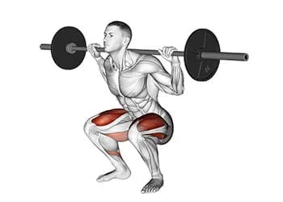
Deadlift
3 sets of 5 repetitions RPE 8.5 You can do the conventional deadlift, the sumo deadlift. Rest time 1 min 30
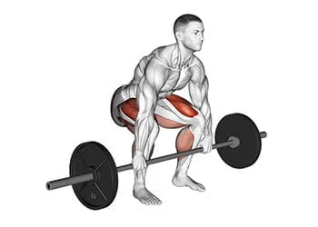
Bulgarian squat with dumbbells
3 sets of 8 repetitions per leg (do 8 reps with one leg, then 8 with the other). RPE 8 You can also do forward lunges with dumbbells or kettlebells,or pistol squats. Rest time 2 min
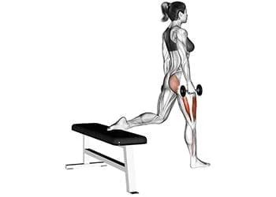
Standing Calf Extensions
4 sets of 8 repetitions RPE 8 You can also perform calf extensions using the press or the Smith machine. Rest time 1 min 30
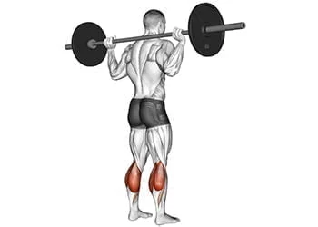
Day 2 – Upper body (strength)
Bench
3 sets of 5 repetitions RPE 8.5 RPE 8.5
You can do the barbell bench press or the dumbbell bench press. Rest time 2 min
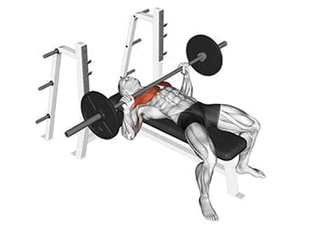
Horizontal draw
3 sets of 5 repetitions RPE 8.5
You can vary with the seated overhand row at the machine Rest time 1 min 30
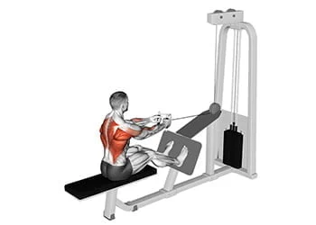
Military press
2 sets of 8 repetitions RPE 7.5
You can also do shoulder presses with dumbbells seated or standing. Rest time 2 min
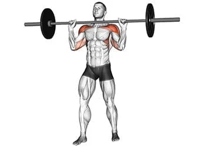
Pull-ups
2 sets of 8 repetitions RPE 7.5
You can also do chin-ups (supination pull-ups). Rest time 1 min 30
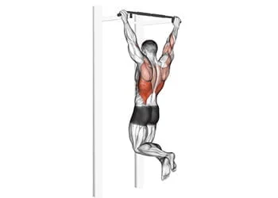
Day 3 – Lower body (volume)
Hip thrust
3 sets of 8 repetitions RPE 8
You can do the pull through on the pulley. Rest time 1 min 30
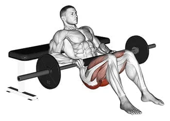
Hack squat
3 sets of 8 repetitions RPE 8
You can vary with the horizontal or 45° leg press. Rest time 1 min 30
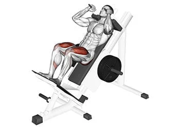
Leg extension
3 sets of 12 repetitions RPE 8
Rest time 1 min 30
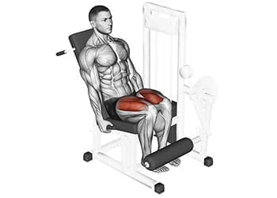
Leg curl
3 sets of 12 repetitions RPE 8
Rest time 1 min 30
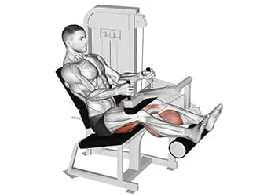
Seated Calf Extensions
4 sets of 15 repetitions RPE 8
Rest time 1 min 30
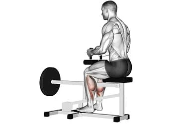
Day 4 – Upper body (volume)
Incline Barbell Press
3 sets of 10 repetitions RPE 7.5
You can do the incline press on the barbell or the incline press with dumbbells Rest time 1 min 30
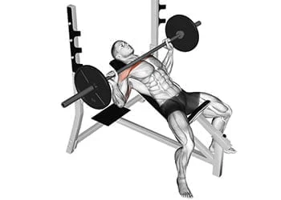
T-Bar Rowing
3 sets of 10 repetitions RPE 8
You can do Australian pull-ups if you don't have this machine. Rest time 2 min
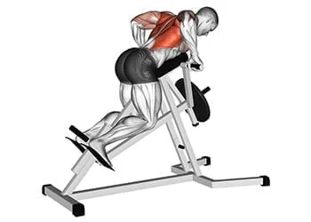
Bench
2 sets of 12 repetitions RPE 8
You can do the barbell bench press or the dumbbell bench press. Rest time 1 min 30
Vertical pull tight grip
2 sets of 12 repetitions RPE 8
Rest time 1 min 30
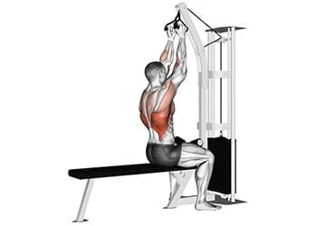
High Pulley Vertical Extensions
2 sets of 12 repetitions RPE 8
You can vary it with any other isolation exercise for the triceps. Rest time 1 min 30
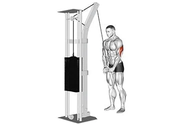
Barbell curl
2 sets of 12 repetitions RPE 8
You can vary it with any other bicep isolation exercise.. Rest time 1 min 30